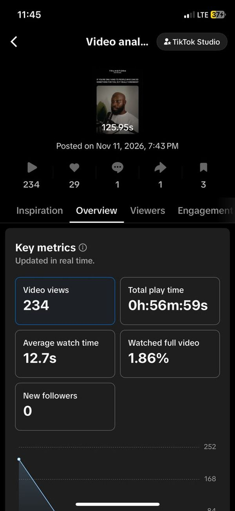
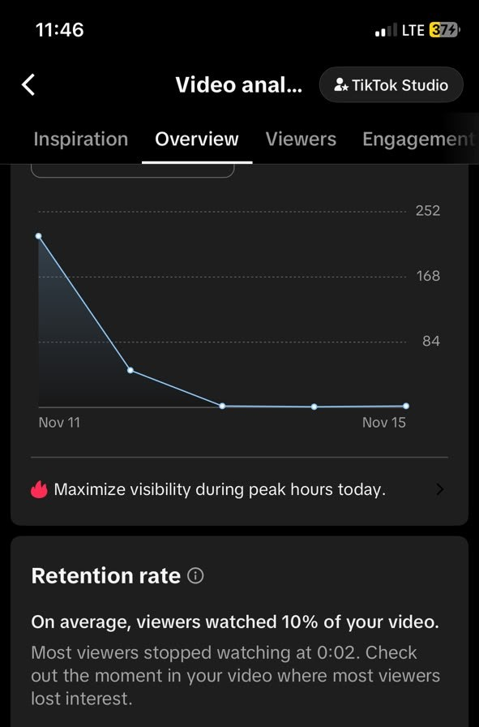
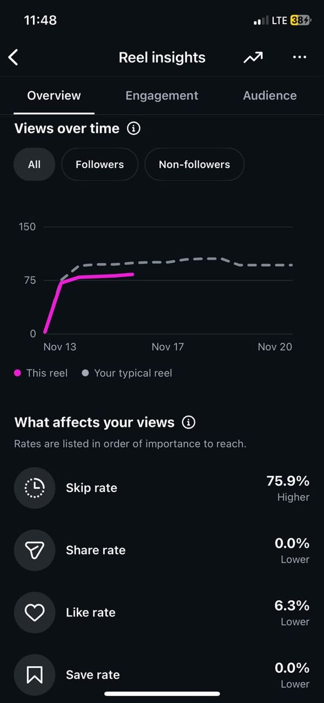
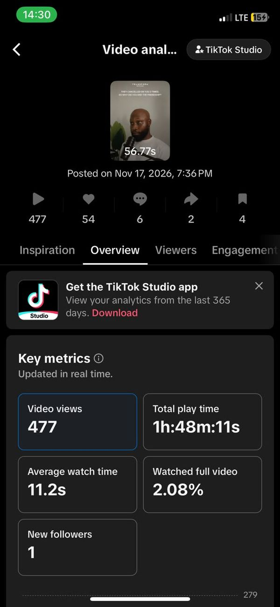
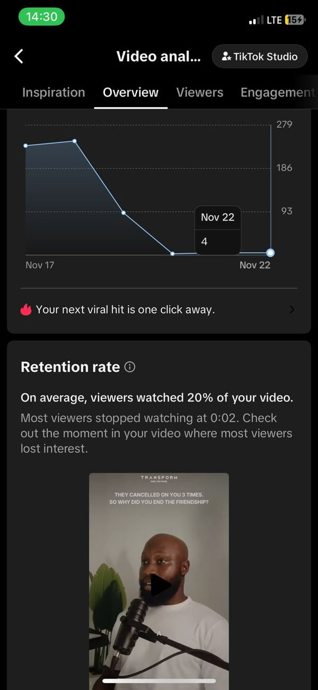
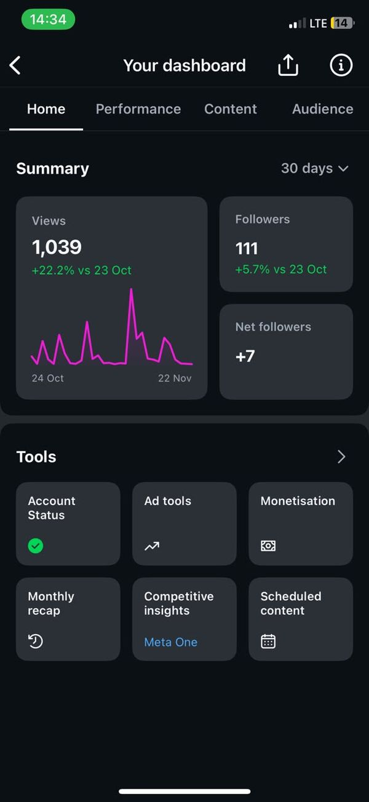

Content performance · TikTok and Instagram
Transform with Tim Nuel
The posts were reaching strangers, then dying on day one with zero new followers. The data showed why.
The problem
Transform posts podcast clips about faith and the human experience. Views came from strangers, but reach stopped after day one or two, and the "You & People" series gained 0 followers from 395 viewers.
What the data said
- Every post lost most viewers by 0:02. Platforms test a post on a small batch of strangers, and if they swipe, the push stops.
- Likes landed at 0:00–0:01. People liked the written headline, then left. The headline worked; the clip's opening didn't.
- A question aimed at the viewer beat a statement about other people: 234 views vs 93, and a 12.4% vs 4.3% like rate.
- 99% of TikTok viewers were non-followers, so the engagement hours before and after posting couldn't save a skipped post.
What I changed
- Wrote a 4-page analytics report for the account owner.
- Set 7 posting rules: open on the strongest spoken line, keep clips to 30–60 s, fill the frame, write question headlines aimed at "you", number the series to give a reason to follow, never replay your own post, and swap engagement time for editing time.
- Checked episode 3 before it went out. It broke five rules, so I planned a recut into two short clips, each with its own hook.
Receipts: before



The result: the first post cut to the new rules
"They cancelled on you 3 times. So why did you end the friendship?" went out on November 17: 57 seconds, opening on the strongest line, with a question headline aimed at the viewer.
477views (was 234)
20%of the video watched on average (was 10%)
54likes (was 29)
6 · 4comments · saves (was 1 · 3)
1new follower (was 0)
+22.2%Instagram views, 30 days
Receipts: after


